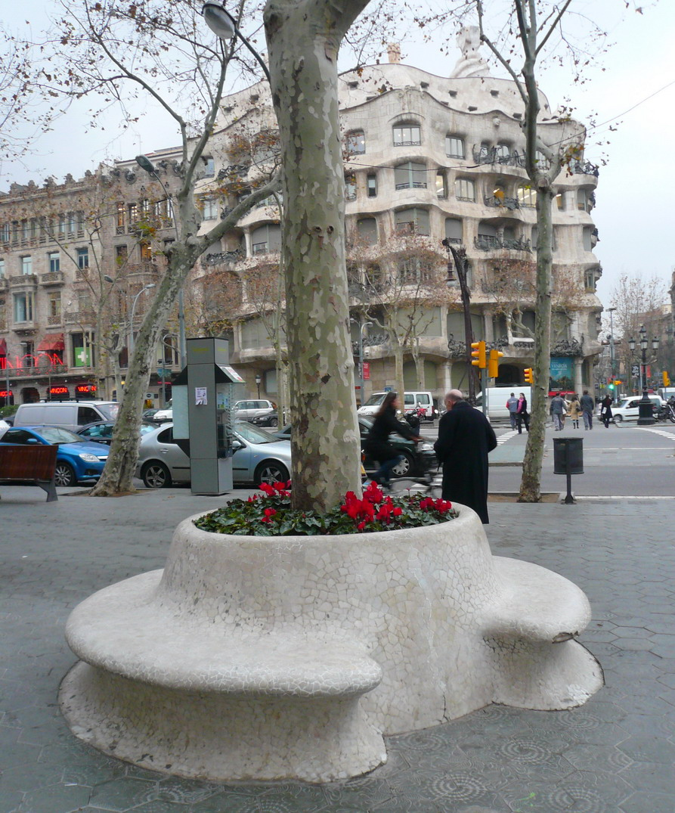
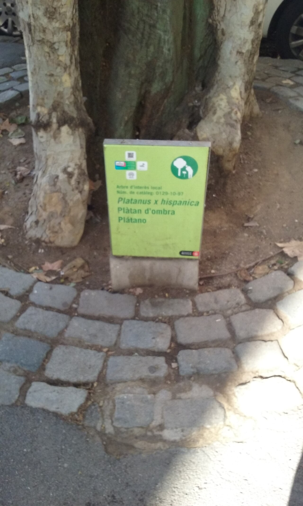
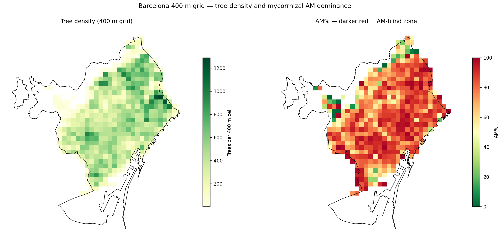
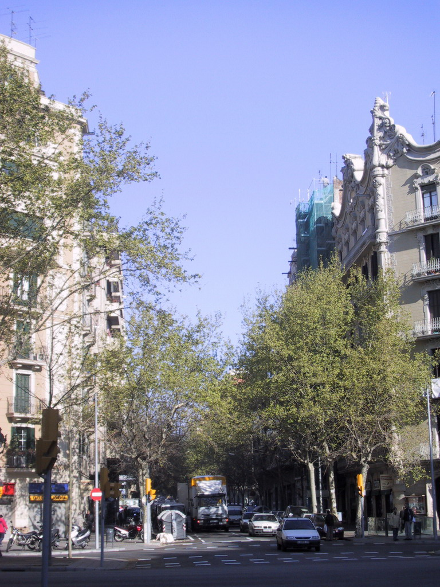
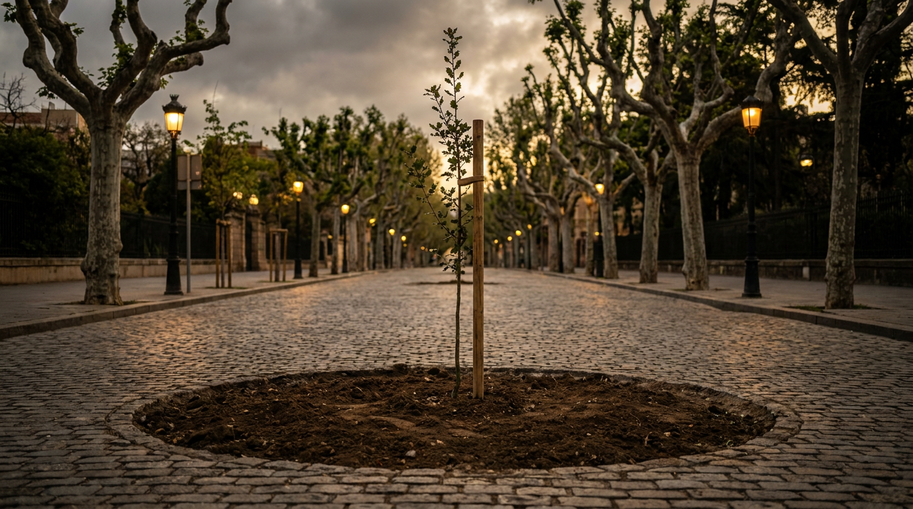

One species is 27.45% of Barcelona's street trees.
The London plane (Platanus × acerifolia) is a near-monoculture: an ecological fragility, and the city's single largest pollen source. We sequenced its renewal.
Pre-registered falsificationPriority map + street worklist deliveredBarcelona · 43,722 plane trees · 1.7M residents
1 / 17 — click the timer to start
Phase 1 — Business Understanding
Barcelona is already removing plane trees. The only question is: in what order?
Current policy (Pla Director de l'Arbrat 2017–2037):
Reduce plane trees from 27.45% to less than 12% of total urban trees.
43,722 specimens today. ~56% will be removed by 2037.
Reason stated by the city council: biodiversity and monoculture risk.
The Platanus is responsible for ~46% of Barcelona's annual pollen index
(Gabarra et al. 2002). Each renewal also relieves the allergenic burden,
but the city does not sequence by this criterion. We provide the missing criterion, in six CRISP-DM phases.
In what spatial order should the city council fell the plane trees so that each removal
alleviates the greatest possible pollen exposure for residents in the area?
User: planning analyst at Parks and Gardens.
Unit of action: census section → street-level work list.

Plane trees on Passeig de Gràcia. Photo: Pere López, CC BY-SA 3.0 (Wikimedia Commons).
2 / 17
In the press · public salience
Barcelona's most contested tree.
Named in the press, by city officials, and in formal resident complaints. Our project rides a debate that is already public.
«Nivells excepcionals de pol·len de plàtan d'ombra a tot Barcelona.»
EN: “exceptional levels of plane-tree pollen across the whole city.”
Xarxa Aerobiològica de Catalunya (XAC) · Regió7, 23 Apr 2026 · V. Raffio
In the Cerdà-plan Eixample “només s'hi produïen plàtans”, but the species “ara no és tan òptim com ho era anys enrere degut al canvi climàtic”.
EN: only plane trees were grown; the species is no longer as optimal as years ago, because of climate change.
Joan Guitart, cap d'Àrea de Gestió de l'Arbrat de Barcelona · Tot Barcelona / Europa Press
Press: “l'arbre més odiat” — the most hated tree (El Periódico, 5 May 2026)Ombudsman: “al·lèrgia greu al pol·len dels plàtans” (Sindicatura de Greuges, 2025)
Read carefully: the spring pollen (Mar–Apr) is the allergen we model. It is distinct from the visible late-April fruit-fibre “rain”.

A real catalogued specimen: the plate reads Platanus x hispanica · Plàtan d'ombra, Ajuntament ID 0129-10-97. Photo: Herodotptlomeu, CC BY-SA 4.0 (Wikimedia Commons).
Every tree we rank is an individually catalogued municipal asset. This is the inventory our pipeline ingests.
XAC / Regió7, 23 Apr 2026 (V. Raffio): “nivells excepcionals” de pol·lenTot Barcelona / Europa Press: Joan Guitart, Gestió de l'ArbratEl Periódico / Diari de Girona, 5 May 2026: 24,000+ plataners, “l'arbre més odiat”Sindicatura de Greuges de Barcelona, Sept 2025
3 / 17
The lever, in three nodes
Cycle A — Hypothesis
Map the city's underground fungal network.
Swap plane trees for ectomycorrhizal hosts, and the hyphal web recovers.
Spoiler: the data killed it →
4 / 17
Phase 2 — Data Understanding
Every source scored before use.
Graded 0–2 on 7 axes (provenance, resolution, coverage, licence, access, bias, maintenance). Adopt only at ≥10/14.
Open Data BCN, Arbrat viari (2024-Q4)GBIF.org occurrence download (DOI-stamped)Soudzilovskaia et al. 2020, FungalRoot v2.0Copernicus CLMS · ESA Sentinel-2 · USGS Landsat
5 / 17
Phase 3 — Data Preparation
From raw layers to one scored grid.
No rows droppedDeterministic (seed 42)Leak-safe spatial split

494 cells, clipped to the municipal boundary.
6 / 17
Phase 4 — Modeling
A spectacular result. The craft was not the problem.
Pre-registered split, three baselines beaten, reproducible end-to-end. Evaluation was not impressed.
Baseline (mean) 0.00Domain heuristic 0.18Linear model 0.877
7 / 17
Phase 5 — Evaluation · the structural flaw
The model reconstructed its own ingredients.
The target composite_score_B was a weighted sum of the very features used to predict it.
predictors sealed · platanus · NDVI
→
composite_score_B = weighted sum of them
→
linear model "predicts" the score
The model only had to invert its own arithmetic.
91%
of the index = sealed surface alone. Biotic terms r < 0.2.
A map of asphalt in a biodiversity costume.
8 / 17
Phase 5 — Evaluation · falsification
Three independent lines, all failed.
Line 1 · Internal
Biotic terms irrelevant (r < 0.2).
Line 2 · External (GBIF)
Adj-R² drops Δ −0.02 · partial-F p = 0.99.
not spatial: Moran's I p = 0.21
99/494 cells · 1,024 occurrences
Line 3 · Literature
Amsterdam: plane-tree fungal diversity rose with urbanisation.
CRISP-DM verdict: STOP (~75–80% confidence). We did not relabel a sealed-surface map as a fungal one.
GBIF: 1,024 occurrences, partial-F testVerbeek, Gomes & Merckx 2025, Plants People Planet (Amsterdam)Berlin null: ~86% of AM richness = sealed/greenness axisPre-registered: phase-5/external-validation-design.md
9 / 17
The Pivot — Cycle B, same data, honest question
We kept what the data supports.
Killed
Mycorrhizal priority
Falsified. Kept only as an untested future-work hypothesis.
What survives
The plane tree, for its pollen
Not the contested fungal mechanism, a property the data support.
Delivered
Allergen-exposure priority
Sequence the felling the city already runs.

Plane trees lining the Gran Via, Barcelona. Photo: Pere López, CC BY-SA 3.0 (Wikimedia Commons).
of Barcelona's annual pollen index · the single largest source
priority = source×exposure
source = mature plane density (min-max)
exposure = residential population (min-max)
Multiplicative: no trees or no people → no priority.
Gabarra et al. 2002, AerobiologiaMaya-Manzano et al. 2017, Urban For. & Urban Green.Pla Director de l'Arbrat 2017–2037
10 / 17
Phase 5 (Cycle B) — Aerobiology validation
Thirty-two years of pollen confirm the source.
The XAC Barcelona station (Hirst volumetric trap, Prof. Jordina Belmonte, LAP-UAB) has counted pollen continuously since 1994. Platanus is risk level 3–4, the maximum tier.
Calendar note (Belmonte et al.): “near the source plants, pollen levels can be higher than the charts show”: the scientific licence for mapping at street level.
Wind-borne plumes carry the source into where people live.
Honest limit: validated on time + species, not space
No open station-level Platanus time-series with coordinates exists. One in-city station gives zero intra-city resolution. The source layer is a literature-anchored emission proxy, confirmed by the 32-year Hirst series on time and species, not spatially.
✓T1 reorders vs density Spearman 0.89 · Jaccard₁₅ 0.30
✓T2 non-redundant corr(source, exposure) = 0.30
✓T3 captures more burden +4.6 pp over density-only
✓T4 sensitivity holds in 3 / 3 arms
age: Spearman 0.999 vs populationsex: women 1.6× antihistamines, spatially flatcycling: no flow data
Honestly rejected layers, declared in the design.
Pre-registered: phase-5/test-design.md (T1–T4)T3 burden capture: +4.6 pp over density-only, top-15
12 / 17
Phase 6 — Deployment
Recomputed where people actually live.
Priority re-run at 1,068 census sections (the native demand grain, dropping the interpolation crutch), then turned into a per-street worklist.
Scope caveat: ~86% of the co-benefit leans on artifacts. Corroboration tests spatial agreement between grains: it does not validate the pollen proxy itself.
street_removal_actions.csv
Section #1 · Montjuïc
Street
Planes
Mature
03024
Av. de l'Estadi
277
114
03024
Av. Miramar
224
100
03024
Pl. Carles Buïgas
117
72
03024
Av. Francesc Ferrer i Guàrdia
92
51
100% address-match; counts reconcile to section totals
No street-level priority column — refuses the ecological fallacy
Honest negative: MAUP
At section grain the exposure layer fails the reorder test it passed at cell grain (Spearman 0.97): a few park-like sections with huge mature-plane clusters dominate. We ship both grains with the caveat.
phase-6/street_removal_actions.csv · 1,068 sections, 0 unmatchedMAUP measured in our own output, not hidden
13 / 17
V3 — An honest win for equity
An equity variant, trade-off measured.
A third layer re-weights by deprivation; uncorrelated with the others (r = −0.008, 0.17), so it adds new information.
−0.5 pp
exposure relief given up in exchange. An "almost-free" equity win.
cost: −0.5 pp exposure relief
INE gross-income-per-person atlas (2023)Deprivation r −0.008, 0.17 vs source/exposure · phase-5 equity artifactCost −0.5 pp exposure relief; deprived-tercile share 40% → 60%
14 / 17
Interactive Map — Deployment Priority
Interactive: switch between 400m cells and census sections, click to see the street list.open in full tab ↗15 / 17 — if blank in Chrome: open with Safari or run a local server
Interactive Map — Efficiency vs. Equity
Which cells change when adding the deprivation weight? Blue = equity gains, Orange = efficiency losses.open in full tab ↗16 / 17

Conclusion
The strongest result is the hypothesis we killed.
A pre-registered falsification, reported without smoothing, is the clearest proof the Evaluation phase did its job. We did not relabel a sealed-surface map as a fungal one; we shipped the honest question instead.
Five contributions, no new algorithm:
Failure-as-outcome · anti-tautology discipline · nominal vs. effective weights · honesty gate for layers · honest downgrade when validation data is missing.
What next
Pilot inside the 2026–27 renewal plan in one district (e.g. Sant Martí), sequencing the felling the city already commits to and pairing it with the Eixos Verds replanting. Platanus sensitises ~37% of the pollen-allergic (~24,500 of the committed renewals), so the co-benefit is measurable from day one.
Full paper: outputs/reports/crispdm-phase-1-to-6-paper.md~37% of pollen-allergic sensitised to Platanus (Puiggòs 2015)Pla Director de l'Arbrat 2017–2037